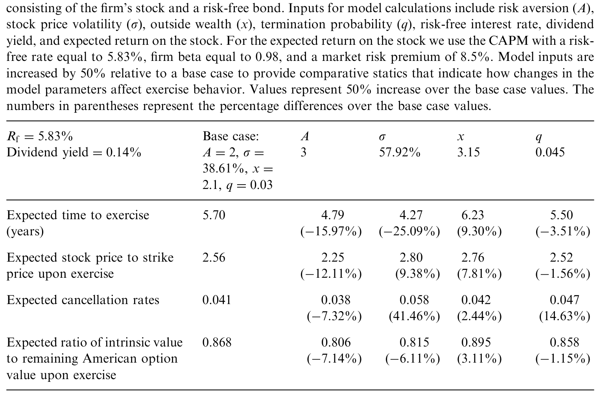
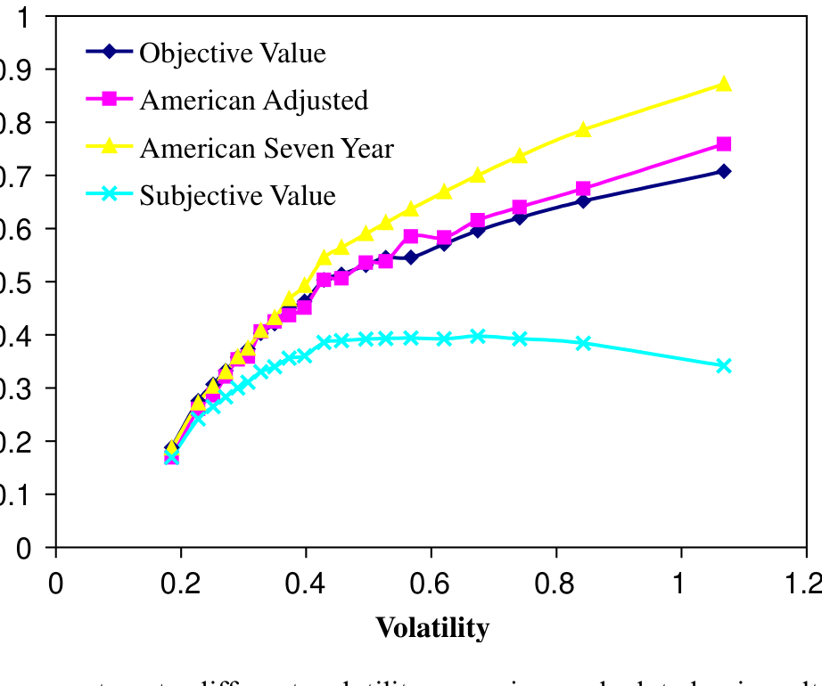
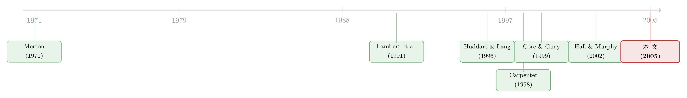

同一份期权，老板算的账和股东算的账为什么不一样？
本文读的是 Bettis, Bizjak & Lemmon (2005, Journal of Financial Economics)：作者用一份覆盖近 4000 家公司、超过 14 万次行权的庞大数据，刻画了高管「提前行权」的种种规律，再用一个效用最大化模型把这些行为「翻译」成期权的价值与激励。核心结论有两层——第一，员工股票期权在行权方式上和可交易期权完全是两码事，因此用 Black-Scholes 直接套是有偏的；第二，但只要把美式期权的到期日改成「预期行权时间」，算出来的客观价值和总 delta 就和精细的效用模型相差无几，真正对模型选择敏感的，是从高管自己角度看的「主观 vega」。
1 一个被「提前」搅乱的估值
先讲一个让无数公司财务和会计人员头疼的小事。
公司给高管发了一份期权：行权价等于授予日的股价，十年到期，分两年左右逐步归属 (vesting)。教科书告诉我们，一份不分红、可自由交易的美式期权，最优策略是一直持有到到期——提前行权等于白白扔掉剩余的时间价值。于是按 Black-Scholes 一算，这份十年期权值多少钱，似乎就该入多少账。
可现实里几乎没人这么干。
高管们总是「提前」把期权行权掉，而且早得离谱。这就带来一个看似简单、实则极其要命的问题：这份期权到底值多少钱？ 是按它「本该」被持有到期的理论价值，还是按它「实际」被提前兑现的方式算？更麻烦的是，「值多少钱」本身就有两个版本——对股东而言，它是公司付出的成本；对拿着它的高管而言，它又是一笔无法分散、不能转让的风险资产，两者未必相等。
这正是 Bettis、Bizjak 和 Lemmon 这篇文章要钉死的靶子。员工股票期权 (employee stock options, ESOs) 之所以难办，是因为它有两个可交易期权没有的特征：不可转让，且持有人（高管）无法充分分散自己在公司里的股权和人力资本。于是一个风险厌恶 (risk-averse) 的高管，出于分散风险的考虑，会比「理论上的最优持有者」早得多地把期权变现。行为变了，价值和激励自然也跟着变。
接着，一个自然的问题是：这种「提前行权」到底有多普遍、由什么驱动、又会把估值和激励扭曲到什么程度？在此之前，这个领域的实证研究少得可怜——不是没人想做，而是没有数据。Huddart and Lang (1996) 只能看 7 家上市公司加 1 家私人公司的行权记录，Carpenter (1998) 也不过是 40 家公司 CEO 的行权样本。本文真正的底气，是一份覆盖近 4000 家公司、14 万余次行权的全样本数据。
2 一个效用模型：期权值多少，取决于谁在拿
要把「行为」翻译成「价值」，得先有一个能容纳风险厌恶和提前行权的模型。本文沿用了 Carpenter (1998) 的思路：一个建立在股价二叉树 (binomial tree) 上的效用最大化模型。
模型的设定是这样的。高管的效用函数是常相对风险厌恶 (constant relative risk-aversion, CRRA) 形式：
这里 W 是高管的财富，A 是相对风险厌恶系数。高管除了手里这份期权，还有一笔「外部财富」x——定义为非期权财富除以期权标的股票的价值，基准校准取 x = 2.1。任何外部财富、以及提前行权拿到的现金，都会被投进一个固定比例的股债组合里，这个组合正是 Merton (1971) 连续时间投资组合的二叉树版本，是高管在「没有这份期权」时本该持有的最优组合。
然后，模型加进两个关键的「摩擦」：
- 每一期，高管都有一个外生的离职概率
q（基准取 0.03）。一旦离职，已归属且实值的期权被立刻行权，虚值的则被作废 (forfeit)。 - 在每个节点，高管都可以选择行权或继续持有。
那么高管什么时候行权？规则朴素得近乎直觉——只要「现在行权」带来的预期效用，超过「继续持有」的预期效用，就行权。形式化地，在每个节点 \(t\) 上比较：
$$ V_t = \max\Big\{\, E\big[U \mid \text{exercise at } t\big],\; E\big[U \mid \text{continue}\big] \,\Big\} $$
最优行权策略，就是从到期日出发、沿二叉树逆向递归地把每个节点的这个比较做一遍。注意一个微妙之处：模型里期权的作废率 (cancellation rate) 是输出，而离职概率 q 才是输入——前者是后者经过「实值/虚值」筛选之后的结果。
有了这个模型，就能算出两个截然不同的价值：
- 客观价值 (objective value)：从公司角度看的成本，等于一份「行权决策由高管控制」的等价可交易美式期权的价值。这是该计入财务报表的那个数。
- 主观价值 (subjective value)：从高管角度看的价值，等于他愿意用多少现金来换这份期权，也就是它的确定性等价 (certainty equivalent)。
客观价值与主观价值的分裂，是理解全文的钥匙。同一份期权，在两套账本上是两个数字：一个是「公司花了多少」，一个是「高管觉得它值多少」。风险厌恶越强、股价波动越大，高管越「嫌弃」这份没法分散的风险资产，两个数字就裂得越开。
那么模型预测的行为长什么样？作者先给了一组比较静态 (comparative statics)：以样本中位数为基准（无风险利率 5.83%、CAPM 下 beta 0.98、市场风险溢价 8.5%、股息率 0.14%、波动率 38.61%，股价与行权价都设为 1，十年期、两年归属），再把每个输入变量在基准上提高 50%，看行权行为怎么变。

Table 1: reports the expected time to exercise and expected stock price upon
如表 1 所示，基准情形下，预期行权时间是 5.70 年（而一份同样条件的可交易美式期权，几乎会被持有到期），行权时股价与行权价之比为 2.56，作废率 0.041。真正有意思的是波动率那一列：把波动率提高 50%，预期行权时间从 5.70 年骤降到 4.27 年（下降约 25%）。直觉很清楚——股价越「抖」，这份不可分散的风险资产越烫手，风险厌恶的高管越想早点落袋为安。同理，风险厌恶 A 提高会让人更早行权、放弃更多剩余价值；而外部财富 x 越多，高管越「扛得住」风险，反而会持有更久；离职概率 q 升高则缩短持有时间。
这一组比较静态，等于给后面的实证立下了一张「可证伪」的清单：如果现实中高管的行权确实随这些公司与个人特征系统性地变化，那这个模型就抓对了机制。
3 数据：14 万次行权从哪来
数据的来源很巧妙。根据 1934 年《证券交易法》第 16 条及相关规则，公司内部人 (corporate insider) 在通过行权获得股份时，必须向 SEC 申报。所有衍生证券（包括期权）的交易与持有信息，记在 Forms 4 和 5 的 Table 2 里——行权数量、交易日、归属与到期日、行权价、行权时股价，一应俱全。Thomson Financial 从 1996 年起开始系统采集这些数据。
作者取 1996 年 1 月到 2002 年 12 月间的全部内部人行权记录，剔除无法匹配 CRSP 股价的公司、以及行权前一年市值低于 5000 万美元的公司，最终得到 141,120 次行权、3,966 家公司的样本。唯一的遗憾是 Table 2 不含期权的授予日，多数情况下也无法准确回填——这不影响刻画行权模式，但会限制某些变量的构造。
样本里的行权行为长这样（为避免离群值干扰，作者主要看中位数）：
- 期权在归属后 2.41 年、到期前 4.25 年被行权；
- 从归属到到期的「可行权窗口」约
7.56年（印证了十年期、约两年归属的典型设计）； - 行权时股价与行权价之比为
2.57（均值 3.55）——也就是说，行权时期权早已深度实值； - 单次行权的美元价值中位数
$193,152（均值高达$1,158,196）。
最关键的一个量，作者称之为 Ratio：行权时的内在价值（股价减行权价）除以一份「到期日等于剩余年限、输入股价等于行权日股价」的美式期权价值。它在 0 到 1 之间，越小说明放弃的剩余价值越多。Ratio 的中位数是 0.90——这意味着，尽管高管因提前行权牺牲了大段期权寿命，但他们通常是在期权深度实值时才动手，平均只放弃了约 10% 的剩余价值。Huddart and Lang (2003) 也用过这个度量。
接着是横截面回归。被解释变量是「到期前多少年行权」和 Ratio，解释变量则直接照搬比较静态给出的清单：股价波动率（用行权日前三年月度收益年化波动率衡量）、股息率，以及——由于风险厌恶和外部财富对外人不可观测——用高管在公司里的职位来代理（CEO/董事长/总裁/COO；非管理层董事；其他内部人如副总裁、CFO）。结果与比较静态高度一致：波动率越高、股息率越高、近期股价异常上涨，期权被行权得越早、放弃的价值越多。高波动驱动早行权这一点，恰恰是效用模型最鲜明的预测。
4 估值：两套账本裂开了
把校准好的模型用到数据上，故事的第一个反转出现了。
作者先做客观价值。他们把效用模型算出的客观价值，拿来和两个「可交易期权」基准比：(1) 一份固定七年期的美式期权；(2) 一份到期日等于预期行权时间的美式期权。结论相当干净——只要把美式期权的到期日改成预期行权时间，算出来的价值就和效用模型的客观价值非常接近，无论是全样本还是按波动率分组都成立。反过来，如果完全不调整、硬按原始到期日算，横截面上的估值偏差就很显著。

Figure 1: Optionvaluesacrosstwentydifferentvolatilitygroupingscalculatedusingalternativevaluation
如图 1 所示，作者把样本按波动率分成二十组，画出不同估值方法给出的期权价值。客观价值与「调整到期日的美式期权」几乎贴在一起，而主观价值则系统性地躺在下面——主观价值一律低于对应的客观价值，且这个缺口随波动率上升而扩大。这与 Hall and Murphy (2002) 的发现一脉相承：风险厌恶的高管，给这份无法分散的期权打了一个折扣，波动越大，折扣越狠。
这里值得停一下。对实务而言，「调整到期日」这个朴素做法之所以好用，是因为它用一个可观测、可估计的量（预期行权时间）吸收掉了提前行权的主要影响，而不必去校准那些看不见的参数（风险厌恶、外部财富）。对于财务报表上的期权费用，这几乎是一个免费的午餐。
至于主观价值是否「相关」，学界本身有分歧（如 Core et al., 2003；Core and Guay, 2003b）。作者明确表示不打算在这里替这场争论盖棺定论，只是想给实务和研究者一个清楚的指引：提前行权和模型选择，会以何种方式影响你的估值结果。
5 激励：delta 与 vega，谁对模型选择敏感？
估值之外，实证公司金融最常关心的是期权提供的激励：让高管想去抬高股价的动力，用期权 delta（对股价的敏感度）衡量；让高管想去增加公司风险的动力，用期权 vega（对波动率的敏感度）衡量。几乎所有研究都用一个固定到期、不调整提前行权的欧式或美式模型来算这两个量（Yermack, 1995；Hall and Liebman, 1998；Core and Guay, 1999）。那么，换成本文的效用模型，结论会变吗？
作者把模型校准用到 Execucomp 里 CEO 的新增期权授予上，再和文献常用的几个模型对比。这里又是一处漂亮的反转——答案取决于你看的是 delta 还是 vega，是单份还是总额。
先看 delta。单份期权上，主观 delta 在量级上更小，与其他模型算出的 delta 相关性也低。但对实证研究更重要的是总授予 delta（每份的 delta 乘以授予数量）：在这个口径上，所有模型给出的总 delta 量级相近、彼此高度相关——相关系数都在 0.96 以上。换句话说，如果你研究的是「期权激励与公司特征的横截面关系」，用哪个模型算 delta，基本不影响结论。
vega 则是另一番景象。单份的客观 vega 和主观 vega 都偏低，与美式模型的 vega 呈中等相关。看总授予 vega：客观 vega 与可交易期权模型的相关系数都在 0.95 以上，但主观 vega 与其他模型的相关系数只有 0.36 到 0.51。这个低相关性是个信号——它说明，如果你关心的是从高管自己角度出发的风险承担激励，那么把风险厌恶（如 Lambert et al., 1991）纳入估值就很重要，模型选择会实实在在地改变结论。
一句话总结这条主线：只要激励是用市场化模型「客观地」度量的，模型选择对横截面研究基本无关紧要；可一旦你认为高管的主观估值才是激励的真相，那么模型选择——尤其是对 vega——就变成一个绕不开的问题。 关于期权 vega 如何驱动高管的风险承担，可参见《高管手里的「波动率期权」，为什么只在寒冬里咬人？》与《股票还是期权？把「破产」写进高管的工资条》。
6 文献脉络
把这篇文章放回它所在的脉络，会看得更清楚。
最上游是 Merton (1971) 的连续时间投资组合理论——它给出了「一个人在没有期权时该怎么配置股债」的最优解，正是本文里高管外部财富投资的基准。接着，Lambert, Larcker and Verrecchia (1991) 第一次把投资组合的视角引入高管薪酬估值，指出一个无法分散风险的高管，对期权的估值会低于市场价值——这正是「主观价值」概念的源头。
然后，实证开始接力。Hemmer, Matsunaga and Shevlin (1996) 和 Huddart and Lang (1996) 用小样本记录了提前行权的存在与相关因素；Heath, Huddart and Lang (1999) 还给出了行为金融视角的解释。真正把「行权行为 → 效用模型校准 → 对股东的成本」这条链条打通的，是 Carpenter (1998)，但她只有 40 家公司 CEO 的数据。与此并行，Hall and Murphy (2002) 系统刻画了「不可分散高管」眼中期权的主观价值如何随波动率塌缩。

本文站在哪儿？它同时继承并扩展了 Carpenter 与 Hall–Murphy 两条线：用一份大到前所未有的全样本，既刻画行权行为的横截面规律，又把客观价值、主观价值、delta、vega 一次性地与文献常用模型对照清楚。它的贡献与其说是某一个惊人的新发现，不如说是给整个领域立了一份「该用哪个数、该担心什么偏差」的实用对照表。
评论与延伸（Q&A + 研究方向）
(a) 几个可能的疑问
Q：既然提前行权放弃了时间价值，为什么说高管「并没有损失太多」？
因为两件事要分开看：高管放弃了大段期权寿命（到期前 4.25 年就行权了），但行权时期权早已深度实值（股价/行权价中位数 2.57）。
Ratio中位数 0.90 说明，就剩余价值而言只放弃了约 10%。早行权牺牲的是「未来可能更值钱」的期权性，而非已经到手的内在价值。
Q：客观价值和主观价值，到底哪个才是「对」的？
取决于你问谁、为什么问。要给财报上的期权费用定价、要算公司付出的成本，看客观价值（等价可交易美式期权的价值）。要理解期权对这位具体高管产生了多大的激励或风险承担动机，看主观价值（确定性等价）。本文有意不替这场争论下结论，只把两者的差异量化清楚。
Q：「把到期日改成预期行权时间」这个捷径，凭什么有效？
因为提前行权对客观价值的主要影响，可以被「预期行权时间」这一个可观测量大致吸收掉。图 1 显示，调整到期日的美式期权价值与效用模型的客观价值几乎重合，全样本和分波动率组都成立；而不调整则在横截面上产生显著偏差。它的好处是绕开了风险厌恶、外部财富这些不可观测的参数。
Q：既然总 delta 在所有模型里相关性都 >0.96，那研究者还有必要纠结模型吗？
对于研究「delta 与公司特征的横截面关系」，基本不必纠结——总授予 delta 的排序在各模型间几乎一致。但 vega 不同：主观 vega 与其他模型相关性只有 0.36–0.51。所以纠结与否，要看你研究的是抬高股价的激励（delta，稳健）还是承担风险的激励（vega，敏感）。
Q：用「职位」代理风险厌恶和外部财富，可信吗？
这是本文识别上最软的一环。风险厌恶
A和外部财富x对外人不可观测，作者只能假设低层级员工更可能风险厌恶、更可能把财富与人力资本集中在公司，从而更早行权；而 CEO、董事更能分散。这是一个合理但粗糙的代理，无法排除职位同时关联其他驱动行权的因素（信息、税务、政治考量）。
Q：模型假设股价过程是外生的，会不会自相矛盾？
会有张力。模型不正式刻画期权本身给高管带来的「抬股价、增风险」的激励效果，而是把股价过程当作外生给定，再去计算价值与激励。这是为了可解性付出的代价：它度量的是「给定股价过程下」的激励大小，而非激励反过来如何改变股价过程。这也是这类效用模型的共同局限。
(b) 几个可能的研究问题与提案
1. 把「主观 vega 之谜」搬到公司债与信用市场
【经济故事】本文发现主观 vega 与客观 vega 大相径庭，意味着高管「真正感受到」的风险承担激励，可能和我们用市场模型算出来的相差很远。而 vega 正是连接高管激励与公司风险政策（杠杆、债务到期、资产风险）的关键。如果债权人定价的是公司真实的风险承担，那么主观 vega 而非客观 vega，可能更能预测信用利差与债券收益。
【可行性】中。Execucomp 可构造高管期权组合，CRSP/Compustat 算波动率，校准主观 vega 需要假设风险厌恶与外部财富——这是最大的不确定来源。信用利差用 TRACE 或 bond pricing 数据。识别上需处理 vega 与杠杆的内生联立，可考虑行业冲击或税法变动作为工具。
2. 用「外资持有人」冲击外生地改变高管的分散能力
【经济故事】本文里行权早晚的核心驱动，是高管能否分散自身风险。如果一家公司被大量外资机构投资者持有（提供了更深的二级市场流动性、更强的对冲渠道），高管理论上更容易分散，应当持有期权更久、放弃更少剩余价值。外资持有度的外生变动（如指数纳入、资本账户开放）可提供干净的冲击。
【可行性】中。需把本文的 Forms 4/5 行权数据与机构/外资持股（13F、跨国持股数据库）合并，识别用纳入 MSCI 指数等准自然实验。难点在外资持股与公司特征的内生性，需要足够外生的纳入规则。
3. 提前行权作为「私有信息」的探测器
【经济故事】Huddart and Lang (2003) 已指出行权含信息。若高管的提前行权不只是分散风险，还隐含对未来股价的悲观判断，那么控制住波动率、股息、近期收益后仍异常早的行权，应当预测随后的负向收益或负面信息披露。这把「行为」和「信息」两条线接起来。
【可行性】高。本文的 14 万次行权数据天然支持事件研究：以行权为事件日，看 CAR 与后续盈余/披露。识别上需小心区分「分散动机」与「信息动机」，可用职位、近期持仓变化、是否临近披露窗口来切分。
4. 危机中的行权行为：当波动率突然飙升
【经济故事】比较静态预测波动率上升会大幅缩短持有时间。2008 或 2020 这类波动率骤升的窗口，提供了近乎实验式的冲击：同一批高管，在波动率冲击前后的行权行为是否如模型预测般急剧前移？ 这是对效用模型最直接的动态检验。
【可行性】高（若数据可延展至危机期）。需要把行权数据延伸到 2008/2020，用高频波动率冲击做事件研究，比较高 vs 低事前波动暴露公司的行权反应差异。
评述者的判断
这篇文章的贡献不在「惊艳」，而在「夯实」。它第一次用一份足够大的全样本，把提前行权这件事从「小样本里的轶事」变成「可刻画、可校准、可对照」的系统事实，并给学界留下两条极其实用的结论：客观价值可以用「调整到期日」廉价逼近；总 delta 对模型选择稳健，而主观 vega 不稳健。对每天要算高管激励的实证研究者来说，这几乎是一份操作手册。
担忧主要在识别。其一，风险厌恶与外部财富用「职位」来代理，过于粗糙，无法排除职位同时携带其他驱动行权的因素；其二，模型把股价过程当作外生，因此它度量的是「给定股价下」的激励，而非激励如何反作用于股价与公司政策——这恰恰是公司金融最想知道的因果方向；其三，授予日缺失限制了对期权「全生命周期」的刻画。
后续我最想看到的，是把「主观 vega」真正接到一个可观测的公司风险结果上——比如债务到期结构、资产波动、信用利差——并用一个外生冲击（指数纳入改变持有人结构、税法改变行权激励）来识别。如果主观 vega 真能比客观 vega 更好地预测公司的风险承担与债权人的定价，那本文这个看似技术性的发现，就会变成连接「高管薪酬」与「信用市场」的一座桥。
参考文献
Carpenter, J. (1998). The exercise and valuation of executive stock options. Journal of Financial Economics 48(2), 127–158.
Core, J., Guay, W. (1999). The use of equity grants to manage optimal equity incentive levels. Journal of Accounting and Economics 28(2), 151–184.
Hall, B., Liebman, J. (1998). Are CEOs really paid like bureaucrats? Quarterly Journal of Economics 113(3), 653–691.
Hall, B., Murphy, K. (2002). Stock options for undiversified executives. Journal of Accounting and Economics 33(1), 3–42.
Heath, C., Huddart, S., Lang, M. (1999). Psychological factors and stock option exercise. Quarterly Journal of Economics 114(2), 601–628.
Hemmer, T., Matsunaga, S., Shevlin, T. (1996). The influence of risk diversification on the early exercise of employee stock options by executive officers. Journal of Accounting and Economics 21(1), 45–68.
Huddart, S., Lang, M. (1996). Employee stock option exercises: an empirical analysis. Journal of Accounting and Economics 21(1), 5–43.
Huddart, S., Lang, M. (2003). Information distribution within firms: evidence from stock option exercises. Journal of Accounting and Economics 34(1–3), 3–31.
Lambert, R., Larcker, D., Verrecchia, R. (1991). Portfolio considerations in valuing executive compensation. Journal of Accounting Research 29(1), 129–149.
Merton, R. (1971). Optimum consumption and portfolio rules in a continuous-time model. Journal of Economic Theory 3(4), 373–413.
Yermack, D. (1995). Do corporations award CEO stock options effectively? Journal of Financial Economics 39(2–3), 237–246.